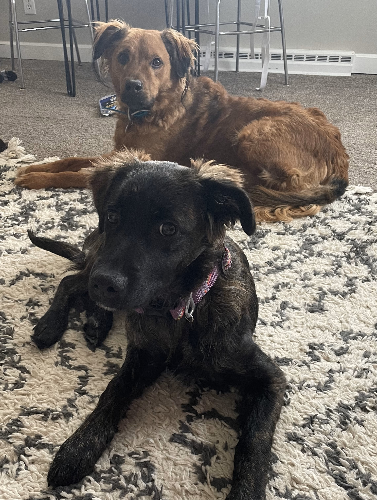
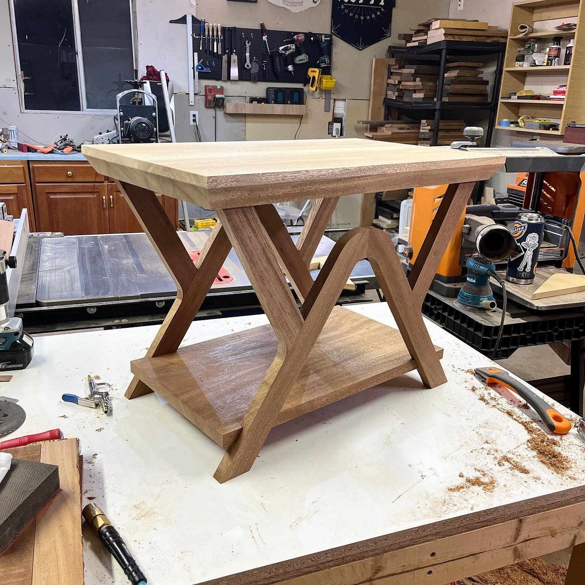
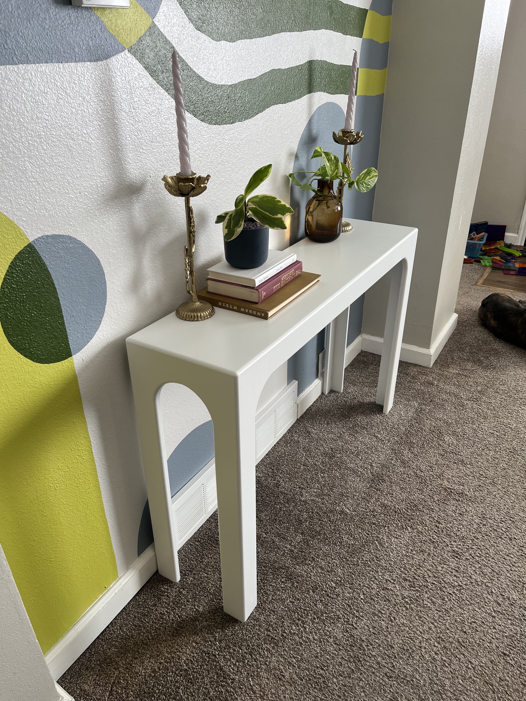
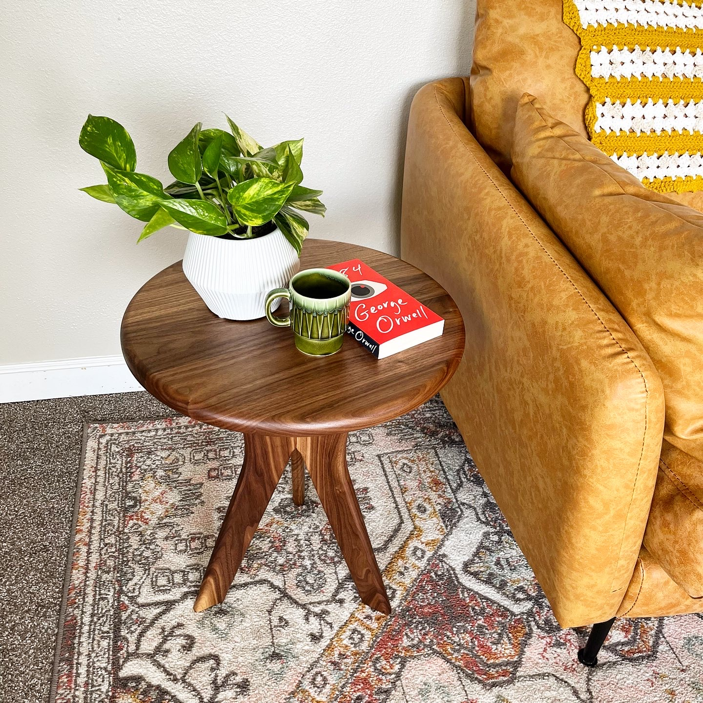
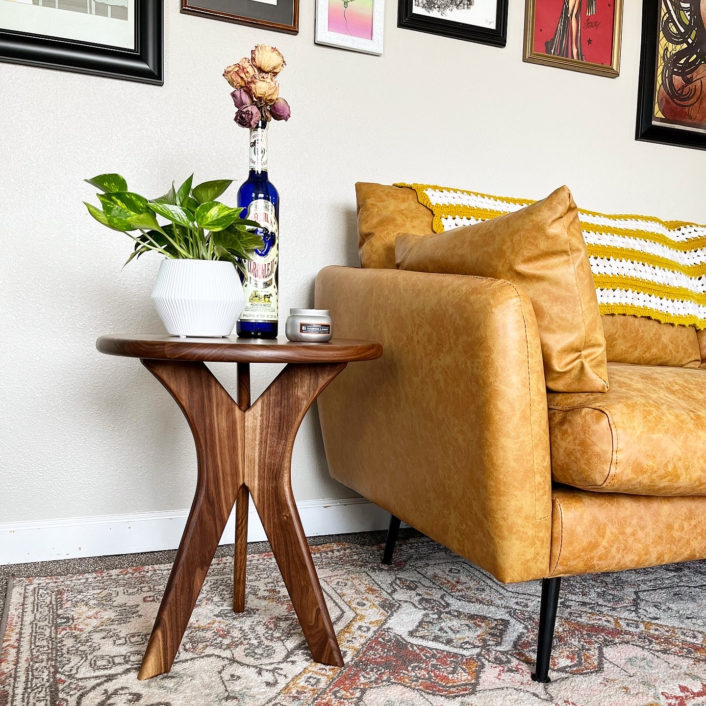

I am currently a student, but have filled my time being a jack of all trades and raising a family before I started this path.


I am first and foremost a family man. I have a wonderful wife, who is a talented artist and fills our home with her unique work. I have 2 boys, a 2 year old and a 6 year old, who spend most of their time trying to see how much gray hair they can give me. We also share our home with 2 exciteable dogs by the name of Zucchini and Maple.
As a jack of all trades, I have spent my time working in multiple fields of work, from custom woodworking to welding, and have loved everysecond that I get to spend creating. There is no more rewarding feeling than finishing a long days work and looking at an actual physical representation of the work you accomplished that day. Starting the day with a blank slate and finishing it with a structure or object that previously did not exist has got to be one of the most gratifying things I've ever done.




